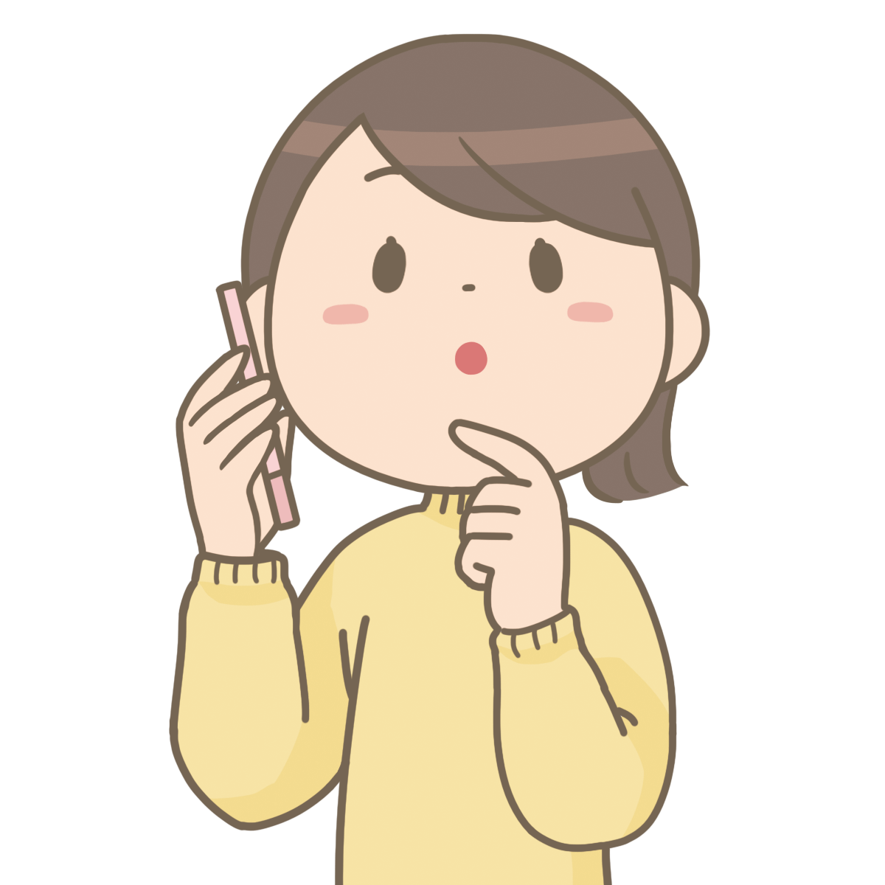
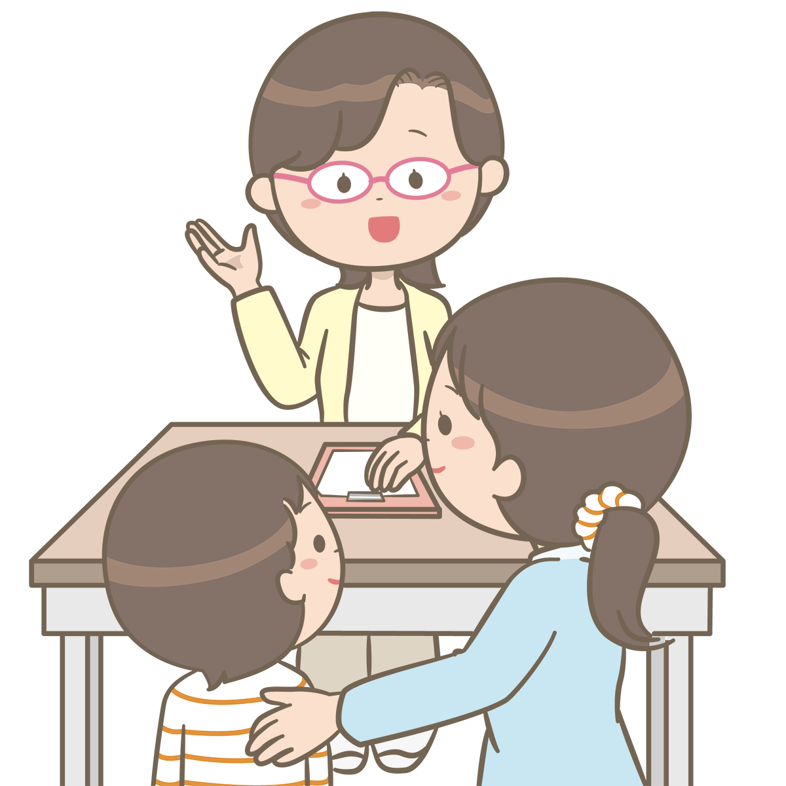
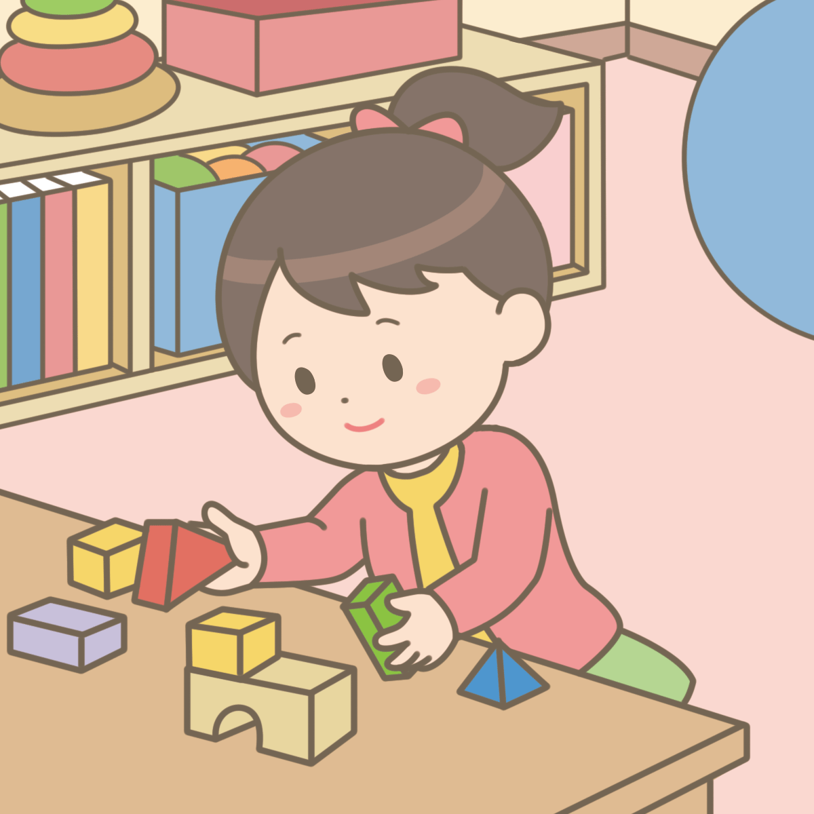

お
子
様
向
け
訪
問
看
護
ス
テ
ー
シ
ョ
ン
子育て、発達に悩む
ご家族とお子様を
看護師がサポート
中学生まで負担なし
一部市町村は高校生まで拡大中
子育て中のお母さんお父さん
こんなことになやんでいませんか？
- 目を離すと何をするかわからないので、日中２人きりで気が休まらない
- こどもを買い物に連れていくと大変なので、なかなかスーパーにもいけない
- こどもはかわいいし、子育ても楽しいけど、少しだけでも一人の時間が欲しい
- 周りに発達障害の子どもを持つ人がいなくて、誰に相談したらよいかわからない
- こどもが急に不登校になり、家からでなくなってどうしたらよいかわからない
ずっと一人で苦しんでいたのですね。
辛かったですよね。
私たちのサポートを受けていただいたお母さんからは 「こんなことならもっと早く相談すればよかった」「子育てを楽しめるようになって前向きになった」「わからないことの不安を相談することで解消できた」 といったお声をたくさんいただいております。
子育てに悩む、ご家族とお子さまへの
発達支援・ご家庭サポート

こども達とのかかわり
本気で遊ぶ！子どもたちは一緒に遊んでくれる人を「信頼」します。遊びを通した信頼関係の土台造りは何よりも大切な最初のステップ
親御さんのサポート
お母さん、お父さんとの信頼関係も、とても大切です。悩みを話せて、一緒に笑い合いながら前に進んでいける。 そんな関係を創っていきます。
知的障がいをもつ子への支援
信頼関係をつくり、その上で知的障がいのある子の生活のしづらさ、”食う” ”寝る” ”出す（排せつ）”などの生活動作をサポート
不登校・発達障がいと
いわれる子たちへの支援
信頼関係ができたら、次のステップへ。それは”体験”と”人と関わる”を通して”世界を広げる”こと！
親子の関わりサポート
「何を考えているのか、どう対応したらいいのかわからない」というお子様への理解と対応をサポート
各種検診・診察サポート
血圧測定や注射の練習、耳鼻科や眼科検診の練習など医療行為を受ける練習を通して、皆が安心して検診・診療が受けられるようサポート

こどもたちの
「心の土台」づくりが
私たちの使命です
お子様向け 訪問看護ステーション
いろどり
いろどりがもっとも大切にしているのは、こども達の 「心の土台」づくりであり、そのために 「心のケアによる安心感」と 「遊びを通した信頼関係」づくりが必要と考えております。
その土台が育まれることで、情緒・生活リズム・学ぶ力などが安定していきます。（期間の個人差あり）
対象となるお子様
発達に心配のあるお子さま、0歳から15歳まで
- 発達がゆっくりな気がする
- 言葉の遅れが気になる
- こどもが何を考えているか分からない
- こどもとの関わり方がわからない・不安
- 生活動作の習得が難しく困っている
- 偏食が強くて心配
- 両手を使う、食器を使う、などが苦手
- 体幹がしっかりせず、ふにゃっとしがち
- 相手の気持ちを考えられない言動をする
- 話が一方的で会話が成立しない
- 話し合いができない
- すぐ親子ケンカになってしまう
- 外に出ることをとても嫌がる、怖がる
- 集団行動が苦手で嫌がる
- かんしゃくを起こす。
どう対応したらいいかわからなくて困っている
1つでも当てはまったらご相談ください
対象地域
豊見城市・糸満市・南風原町・与那原町・南城市・八重瀬町・西原町・那覇市
(その他エリアもご相談ください)
ご利用料金
| 中学生までのお子さまの場合 | 料金 |
|---|---|
| ご加入の医療保険にてご利用いただけます。 また、各助成制度も適応可能。 |
乳幼児・こども医療費助成制度 適応の場合 伊丹市、西宮市、宝塚市：自己負担0円 尼崎市：自己負担金800円/月 |
| 交通費 | 無料 |
子育てがつらく感じる前に
まずはご相談ください
「うちの子は対象なのかな？」「もっと詳しく話を聞いてみたい」なんでもいいので
あなたの不安や疑問を私たちにぶつけてみてください。
ご利用者さんから頂いた声
間違いなく子どもの世界が広がるキッカケになります
小学4年生
不登校

小4の不登校の我が子が利用させていただいてます。
最初の頃は、なかなか話すこともできなかったのですがスタッフさんが子どもの興味のあることにとことん付き合ってくれたり、どんな風にしたら遊べるのか？をたくさん考えて、触れ合ってくださいます。
そのおかげで、今ではスタッフさんに自分から話したり冗談を言いあうまでになりました。お友達もできて子どもの世界がどんどん広がっています。
第3者が家庭に入る、というのは最初は抵抗があるかもしれませんが、間違いなく子どもの世界が広がるキッカケになりますし、親御さんも少し俯瞰して子どものことを見られるようになり、色々な気づきがあります。
本当に利用して良かったなぁと思います、これからもよろしくお願いします！
間違いなく子どもの世界が広がるキッカケになります
小学4年生
不登校
小4の不登校の我が子が利用させていただいてます。
最初の頃は、なかなか話すこともできなかったのですがスタッフさんが子どもの興味のあることにとことん付き合ってくれたり、どんな風にしたら遊べるのか？をたくさん考えて、触れ合ってくださいます。
そのおかげで、今ではスタッフさんに自分から話したり冗談を言いあうまでになりました。お友達もできて子どもの世界がどんどん広がっています。
第3者が家庭に入る、というのは最初は抵抗があるかもしれませんが、間違いなく子どもの世界が広がるキッカケになりますし、親御さんも少し俯瞰して子どものことを見られるようになり、色々な気づきがあります。
本当に利用して良かったなぁと思います、これからもよろしくお願いします！
訪問看護スタッフ

ご利用までの流れ
-
STEP1
電話またはLINEお問い合わせ
-
STEP2
担当者とご自宅でお面談
-
STEP3
医師診察・訪問看護計画書作成
-
STEP4
訪問看護ご利用開始
よくある質問
訪問看護の時間はお母さまの休息（レスパイトケア）のお時間にあてていただいても結構です。
お問い合わせくださいませ。
そのほか、発達障害や起立性調節障害、などお持ちの方も多数サポートさせていただいております。
またオンライン診療可能ですので病院に行けず困っている方もご利用されています。
子育てがつらく感じる前に
まずはご相談ください
「うちの子は対象なのかな？」「もっと詳しく話を聞いてみたい」なんでもいいので
あなたの不安や疑問を私たちにぶつけてみてください
メールでのお問い合わせ
お問い合わせありがとうございます。